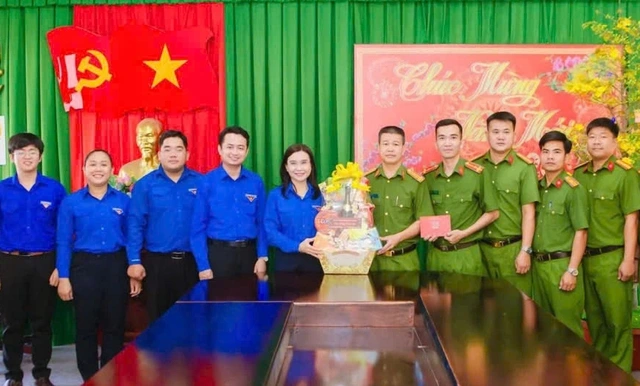
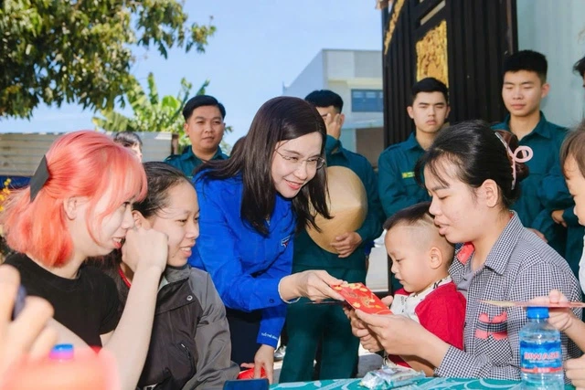

TW Đoàn thăm và động viên các đơn vị làm nhiệm vụ trực tết tại TP.HCM
Sáng 16.2 (29 tết), Đoàn công tác do đồng chí Nguyễn Phạm Duy Trang, Bí thư TW Đoàn, Chủ tịch Hội đồng Đội TW làm trưởng đoàn đã thăm, chúc tết các đơn vị làm nhiệm vụ trực tết và thanh niên công nhân trên địa bàn TP.HCM.
Đoàn công tác đã tới thăm hỏi và động viên đội ngũ y, bác sĩ trẻ đang thực hiện nhiệm vụ trực tết tại Khoa Nhi, Bệnh viện đa khoa Bình Dương; chúc tết tiểu đoàn Cảnh sát cơ động số 2 (thuộc trung đoàn Cảnh sát cơ động Đông Nam bộ) và thăm hỏi, động viên Chi hội thanh niên công nhân Bảo Anh, khu phố 3, phường Bình Cơ, TP.HCM.

Tại các điểm thăm, đồng chí Nguyễn Phạm Duy Trang đã gặp gỡ, lắng nghe, chia sẻ và trao quà tết, gửi lời chúc năm mới, động viên lực lượng vũ trang, các y bác sĩ, bệnh nhân và thanh niên công nhân trước thềm năm mới.

* Trước đó, Đoàn thanh niên xã Dầu Tiếng (TP.HCM) đã phối hợp cùng cán bộ, chiến sĩ Đại đội 4 – Lữ đoàn 23 (Bộ đội thông tin Núi Cậu) tổ chức chương trình gói, nấu bánh chưng tặng các hộ gia đình có hoàn cảnh khó khăn trên địa bàn xã.
Chương trình vinh dự đón tiếp đồng chí Lê Quốc Phong, Ủy viên TW Đảng, Phó bí thư Thường trực Thành ủy TP.HCM và đồng chí Nguyễn Phạm Duy Trang, Bí thư TW Đoàn, Chủ tịch Hội đồng Đội TW tham dự, động viên và chung vui với cán bộ, chiến sĩ, đoàn viên thanh niên.
Dưới sắc áo xanh tình nguyện và màu áo lính thân thương, đoàn viên, thanh niên và cán bộ, chiến sĩ và các ấp đã cùng nhau chuẩn bị nguyên liệu, tự tay gói nên những chiếc bánh chưng nghĩa tình gửi trao những hộ gia đình khó khăn .
Hoạt động không chỉ góp phần giữ gìn nét đẹp truyền thống ngày tết mà còn thắt chặt tình quân – dân, khẳng định vai trò xung kích, trách nhiệm của thanh niên Dầu Tiếng trong chăm lo đời sống nhân dân, lan tỏa tinh thần "Không để ai bị bỏ lại phía sau" trong mùa xuân mới.